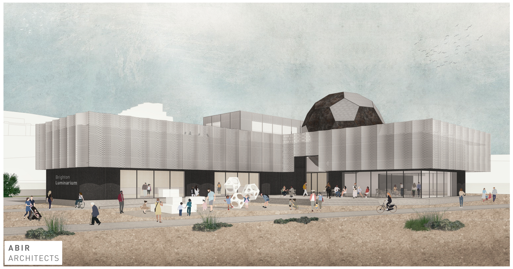

Executive Summary
{kind=link}
We propose that a science & technology discovery centre, called the Brighton Luminarium, is built at the Black Rock site on Brighton’s sea front, immediately west of the Brighton Marina. The theme of the Brighton Luminarium is Light. The centre will tell the stories of local Victorian pioneer inventors (such as Magnus Volk, who introduced electric lighting to the Royal Pavilion in 1883), how the quantum nature of light creates the colours that we see all around us (and how that is used to develop the next generation of ultra-fast quantum computers in Brighton), and how astronomers study distant light to understand our place in the Universe.
We are confident that the Brighton Luminarium will be a success for the following reasons:
- The Brighton Luminarium would be a major tourist attraction. Over 20 million people visit UK science centres each year, yet the nearest to Brighton is a 45-minute drive away.
- It will be a unique attraction to showcase Brighton, consisting of the first Quantum Museum in the world. Innovative architecture, exhibits and interactives will create a memorable and exciting day out for tourists, families and school groups alike.
- Based on visitor numbers at similar venues around the UK (see the popularity page), we would expect at least 300,000 visitors to the Brighton Luminarium per annum.
- Brighton’s Palace Pier, 2km away from Black Rock, is the most popular UK attraction outside London, with almost 5 million visitors each year.
- Volk’s Electric Railway, a popular heritage attraction with over 150,000 journeys each year, would act as an accessible link between the Luminarium, Palace Pier & Aquarium.
- The Brighton Luminarium would support science teaching in schools and colleges, providing curriculum enriching activities in state-of-the-art classrooms for all ages.
- The classrooms would be available for hire as event venues outside of school hours.
The proposing team are in the process of setting up a charity, Brighton Luminarium, to raise funds, develop, build and operate the centre.
Funding required for the completion of the project is expected to be £12M (as detailed in the financial considerations page). This covers the cost of developing detailed architectural plans, planning applications, surveying works, construction of the building and installing the infrastructure required to operate the centre. This cost also includes equipment and furnishings and will enable heritage and other artefacts to be acquired and displayed throughout the centre.